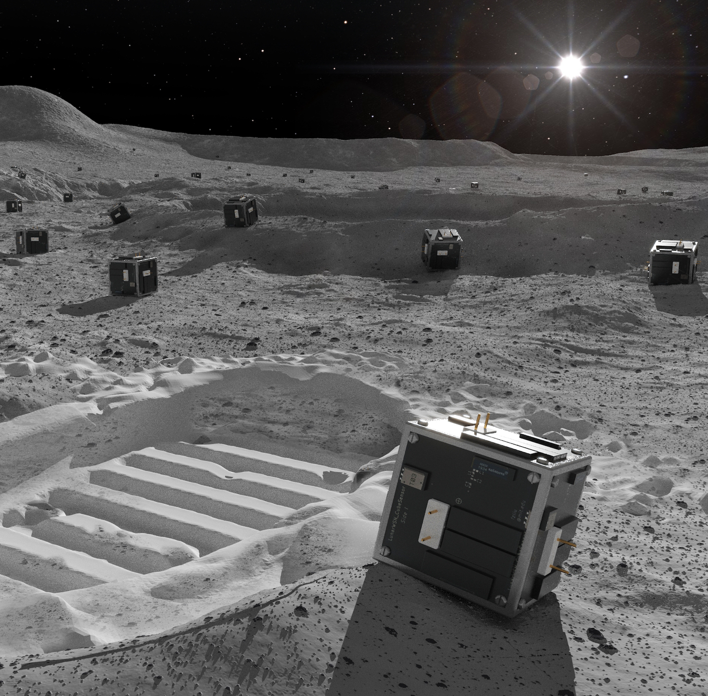

Fangzheng Liu
About me
Hi! I'm a PhD student at Massachusetts Institute of Technology Media Lab. I'm studying in Responsive Environments group, advised by Prof. Joe Paradiso


I'm a maker, engineer, and a future astronaut! I love painting, basketball, and hiking! I really enjoy building things (embedded systems, electroncal-mechanical systems) that can do some interesting things. I love space a lot, and I think it's a real romantic place. My current interest is Wireless Sensor Network and miniature robotic swarm for space explorations.
Background
I got my Master degree in Signal and Information Processing from China (2018). After that, I went to CERN (European Organization for Nuclear Research), and worked as an engineer in the AMS-02 (Alpha Magnetic Spectrometer) experiment, a state-of-the-art particle physics detector operating on the International Space Station (ISS). The experiment is led by Nobel laureate of physics Prof. Samuel C. C. Ting.

Me at AMS-02 & The AMS-02 on the ISS.

The AMS-02 UTTPS thermal vacuum test in Terny, Italy.
After a year of work at CERN, I came to MIT.
Research interest
My research focuses on Wireless Sensor Networks and Miniature robotic swarms for space explorations. My side projects include automatic cuicirt debug, onbody sensors, etc.
Projects
|  |

|

|